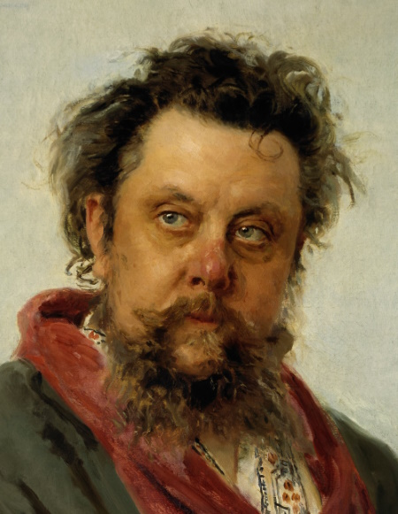
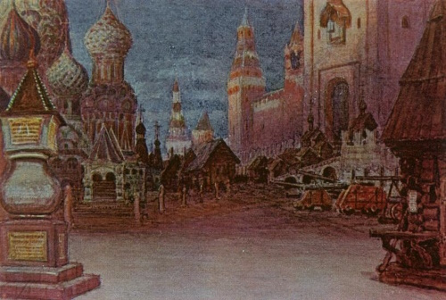

Modest Mussorgsky (1839-1881) was one of Russia's
"Mighty 5" of traditional Russian classical composers. He along with the other 4 in his group wrote music based off of Russian folklore along with other national themes and strove away from traditional Western conventions of music during the Romantic Period.
Mussorgsky is best known for
Night on Bald Mountain, Pictures of an Exhibition, and Khovanshchina.

Painting of the composer

Painting of Khovanshchina, one of Mussorgsky's operas based off of historical events